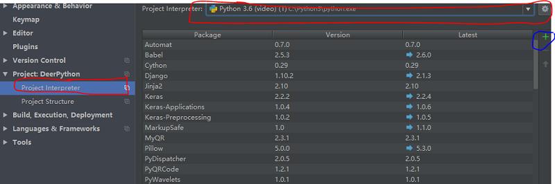
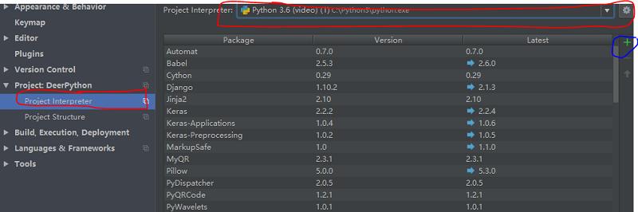

还未完成暂不开放，谢谢
简单来讲，模块就是一个.py文件，为了更方便编程，引用模块什么有效。
import numpy #引用numpy 模块
import numpy as np #引用numpy并命名为np
from math import sqrt #只引用math中的sqrt部分
当一个模块被另一个模块引用时，我们不希望全部功能都执行，那__main__就可以派上用场了，也许这样说有点抽象，那我们看一个例子：
rectangle.py # rectangle.py用来存放长和宽
L,W=3,4
def main():
print("长和宽为：",L,W)
mian()
# 如果执行rectangle.py 会得到： 长和宽为：3 4
Area.py #Area.py来计算矩形的面积
import rectangle
def area():
return L*W
def main():
print("矩形面积为：",area())
main()
# 如果执行rectangle.py 会得到：
长和宽为：3 4
矩形面积为：12我们发现在执行Area.py文件时由于引用了rectangle.py文件，所以将rectangle.py内的main()也一起执行了。
但是我们只想得到第二个文件的main()该怎么办呢。只需要改一下rectangle.py即可：
# rectangle.py用来存放长和宽
L,W=3,4
def main():
print("长和宽为：",L,W)
if __name__ == "__main__":
main()矩形面积为：12
所以__main__就是限定模块中一些功能只有在模块作为主程序运行时才会被运行。
通常Windows上安装是通过pip安装，按win+R输入cmd进入命令提示行，直接输入
pip install 模块名 # python2
pip3 install 模块名 # python3如果你是自己在IDE中安装，还记不记得安装PyCham时配置环境的时候有个绿色的+,点击后直接搜索需要的模块安装就可以了。
 

还未完成暂不开放，谢谢

还未完成暂不开放，谢谢

还未完成暂不开放，谢谢
如果大家有什么建议或者建议请及时联系我我才能为大家做出更好的教程